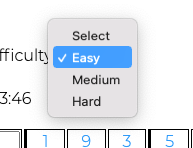
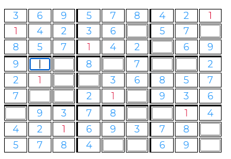
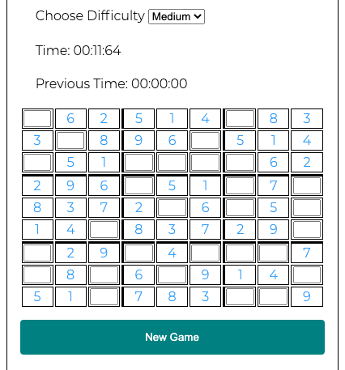
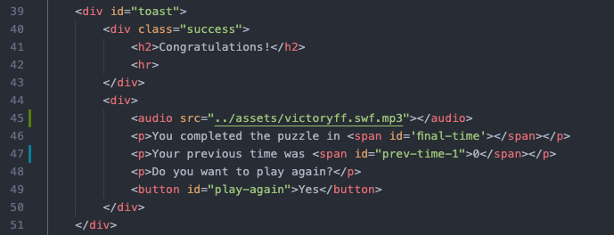

How I Implemented My Sudoku Game and How I Satisfied the Remainder of the Requirements
Game Grid Using CSS That is Generated by Javascript
I use JavaScript to add CSS in many places around the grid page. A few locations are the 'givens' in the dynamically generated Sudoku puzzle, the timer above the table and to show/hide the 'start game' and 'new game' buttons. I think my favorite location is in the pop up after you solve a puzzle
User Input in the Form of Text, Select Options, and Buttons
The use is able to input information by text in each input in the game grid. The user can also click buttons to add a new puzzle board to the game. Finally, the user is able to click on an options menu to select their difficulty.
User Input in the Form of Mouse Clicks
The user can input data in the form of mouse clicks by clicking on the input boxes in the game grid. They will also be able to click on various buttons around the page to start new games and select difficulties. The player is also able to click on the 'given' numbers to highlight them, helping them find the numbers they need to solve the puzzle.
Dynamic Modifications of HTML using innnerHTML and DOM Functions
The most obvious modifications of HTML using inner HTML is the where I added my Sudoku puzzle. Below, you will see the function I wrote and a screenshot of the table.
function buildGameGrid(len, width) {
// build the puzzle table
let table = document.getElementById("game_grid");
console.log(table); // remove later
// clear table data
table.innerHTML = '';
// build the outer shell of the table
const newTable = document.createElement('table');
const newTableBody = document.createElement('tbody');
table.insertAdjacentElement('afterbegin', newTable);
newTable.insertAdjacentElement('afterbegin', newTableBody);
// create table rows
for (let row = 0; row < len; row++) {
const newTableRow = document.createElement('tr');
// create table columns
for (let col = 0; col < width; col++) {
const newTableCol = document.createElement('td');
newTableRow.appendChild(newTableCol);
newTableCol.appendChild(updateCells(row, col));
newTableCol.setAttribute('id', `c${row}${col}`);
// setAttribute of every 3rd row
if (row != 0 && row % 3 == 0) {
newTableCol.setAttribute('class', 'border-top');
}
// setAttribute of every 3rd col
if (col != 0 && col % 3 == 0) {
newTableCol.setAttribute('class', 'border-left');
}
// check for corner pieces
if ((col != 0 && col % 3 == 0) && (row != 0 && row % 3 == 0)) {
newTableCol.setAttribute('class', 'border-left border-top');
}
}
newTableBody.appendChild(newTableRow);
}
}

Use of XMLHttpRequest to Load JSON Game Data That is Displayed on the Grid Page
Incorporates HTML5 Audio tags and Local Storage
Audio tag can be found in the 'toast' element or the popup after the player has won. The sound is triggered when the game is completed. I also added some logic for when the player finishes a game, their time is stored in local storage and displayed on the page. I did this becuase I thought that it would be a fun way to compete with yourself.

Game Logic Code
- Selecting a Difficulty
- Selecting a difficulty has pretty simple logic. I determine the number of hidden cells by the users selection with the following rules {'easy': 19, 'medium' 28, 'hard': 37 }. What this means is, if the user selects the 'medium' difficulty, the player will have 28 hidden cells.
- Start Game/New Game Buttons
- Both the start game and new game buttons have an event handler that triggers on user click.
- The start game button updates the models 'gameover' value to false, calls the function that seeds the puzzle and the solution, then it builds the game grid. After those functions are ran, it calls the startTimer() function, uses CSS to hide the start game button and show the new game button. This will also add event listeners to all 'td' table elements to allow the logic in the 'table logic' section later.
- The New Game Button updates the models 'gameover' value to true, 'grid', and 'solution' values to empty arrays. Then it hides the New Game button and shows the Start game button. After that it stops the timer and saves the time to local storage. However, the time is only saved to local storage if the puzzle is solved. If the user just starts a new game with out completing the puzzle, their time will not be saved.
- Build Table Logic
- I first build an a shuffled array that has 9 indeces and no repeats.
- After that I build a matrix with that array, using recursion and shifting each row by 3 indeces. However, on the third and seventh rows, I shift the first and third row by one. This allows me to genereate a new table that follows all of the Sudoku rules.
- I then rotate the whole matix 90 degrees to not make my pattern so easy to see.
- I then use the selected difficulty to generate the number of hidden cells and randomly place them throughout the board.
- The buildGameGrid() function accepts length and width parameters. However, when the function is called I pass in 9 for both parameters to ensure the correct size of table is built.
- buildGameGrid() also dynamically creates all needed table elements using createElement() and appendChild().
- While table is being created I call another function that modifies the table elements with based off of the grid data saved in the model. If the cell data does not equal zero, it will add the number to the tr element. However, if the cell data does equal zero, it will build a new input element and add it to the table.
- Table Logic
- All tr elements the in the table has the event listener 'click'. This allows the player to click on any 'given' cell to change the color, display its coordinates and value. However, if the clicked element is an input, the color will not change.
- The input elements have the 'keyup' event listener. This lets me check if the puzzle has been completed once the player adds a value.
- Timer Logic
- The timer has an animation that updates the dom every 100th of a milisecond.
- The timer is triggered when the 'start game' button is clicked and runs until either the new game button is clicked or the puzzle is completed.
- After the game has ended by either the new game button or the puzzle being completed, I stop the timer and disply the time on the DOM. I also update the color of the time to bring the users attention to their time.
- Puzzle Info and Local Storage
- I update the local storage once a game has been finished. If the puzzle is completed, I add the time to the prevTime value in local storage.
- I check if the game is over by using a variable called prevGameComplete in the model. This allows me to change the boolean value if the 'grid' and 'solution' values are the same. This gets checked when the checkIfPlayerWon() function is called.
- Each tr element has an event listener that listens for user clicks. This allows me to display the cell location and value to the DOM.
- Using the same event listeners, I update the CSS to change the color of the clicked cell.
- I also use this to check if the values entered into each cell is correct. Then I later use it to check if the game is complete.
- Complete Game Logic
- Each tr element runs the function checkIfPlayerWon(). This function converts the 'grid' and 'solution' values to strings and compares them. If they are the same, I trigger the popup and end game.
- Once the game is complete, I update the time on the DOM from the local storage and then I reset the model values.
EXTRA CREDIT: Includes a Second HTML5 Component
My first HTML component is the sound element in the toast or popup when the game ends. This is triggered by the player completing the table. I also added the players time in Local Storage to allow the user to compare their previous time with their current time. This gives a little more competition to the game.
